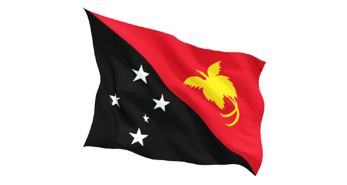

|  |
Papua Nugini atau Papua Guinea Baru atau Nugini Timur sebuah negara yang terletak di bagian timur Pulau Papua dan berbatasan darat langsung dengan Provinsi Papua, Indonesia di sebelah barat. Benua Australia di sebelah selatan dan negara-negara Oseania berbatasan di sebelah selatan, timur, dan utara. Ibu kotanya, dan salah satu kota terbesarnya, adalah Port Moresby. Papua Nugini adalah salah satu negara yang memiliki keragaman yang tinggi, dengan lebih dari 850 bahasa lokal asli dan sekurang-kurangnya sama banyaknya dengan komunitas-komunitas kecil yang dimiliki, dengan populasi yang tidak lebih dari 6 juta jiwa. Papua Nugini juga salah satu negara yang paling luas wilayah perkampungannya, dengan hanya 18% penduduknya menetap di pusat-pusat perkotaan. Negara ini adalah salah satu negara yang paling sedikit dijelajahi, secara budaya maupun geografis, dan banyak jenis tumbuhan dan binatang yang belum ditemukan diduga ada di pedalaman Papua Nugini.